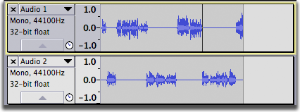
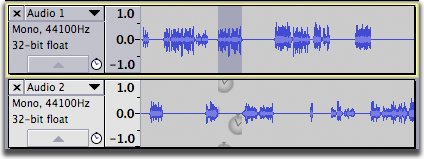

Sync-Locked Track Groups - Editing
From Audacity Manual
Editing operations on Sync-Locked Track Groups
The Edit menu commands Cut, Delete and Paste will affect all tracks in the currently selected Sync-Locked Track Group because these commands change the length of the tracks(s).
These commands are: Split Cut, Copy, Trim Audio, Split Delete, Silence Audio, Split, Split New, Detach at Silences and Duplicate.
Examples of editing operations on Sync-Locked Track Groups
- Cut
- Silence Audio
- Trim Audio
- Paste
- Label track defined Sync-Locked Track Groups
- Selecting in label tracks
Cut
- Before
- After Edit > Cut
- 
- Result: Audio has been cut from the lower track as well as the upper track.
- The same thing happens for Edit > Delete because those commands remove audio from a track and the following audio on all sync-locked tracks must move to remain synchronized.
Silence Audio
- Before
- After Edit > Remove Special > Silence Audio
- Result: There has been no change in the lower track.
- This is because "Silence Audio" does not move (change the time position of) any audio in the selected track.
Trim Audio
- Before
- After Edit > Remove Special > Trim Audio

- Result: There is no change in the lower track.
- Although the length of the upper track has changed, it remains synchronized with the lower track.
Paste
Here is the same project but now there is no selection. The cursor is in the top track, and that track is selected as can be seen by darker gray color of the Track Control Panel.
- Before
- After Edit > Paste
- 
- Result: Audio is pasted into the top track moving the following audio to the right.
- Silence is inserted in the lower track to keep it synchronized with the top track.
Label track defined Sync-Locked Track Groups
Here is a project with two mono audio tracks above a label track all of which are above a stereo music track. There is a selection in the upper mono audio track. The sync-locked selection extends into the second mono audio track and into the label track but not into the stereo music track. The label track defines a Sync-Locked Track Group comprised of itself and the two mono audio tracks above it; this can be verified by examining the Track Control Panels and observing the sync-lock icons at the lower right-hand corners.
- Before
- After Edit > Cut
- Result: Audio is removed from the two mono audio tracks and labels in the label track are moved so that the three tracks remain synchronized.
- No audio is removed from the stereo music track.
Selecting in label tracks
- Selections can be made in a label track and the Sync-Locked selection will extend into any audio and label tracks in the group.
- Before
- After Edit > Remove Special > Cut
- Result: The selected portion of the label track is removed, including the label spanned by the selection.
- Audio is removed from the Sync-Locked audio track as well.